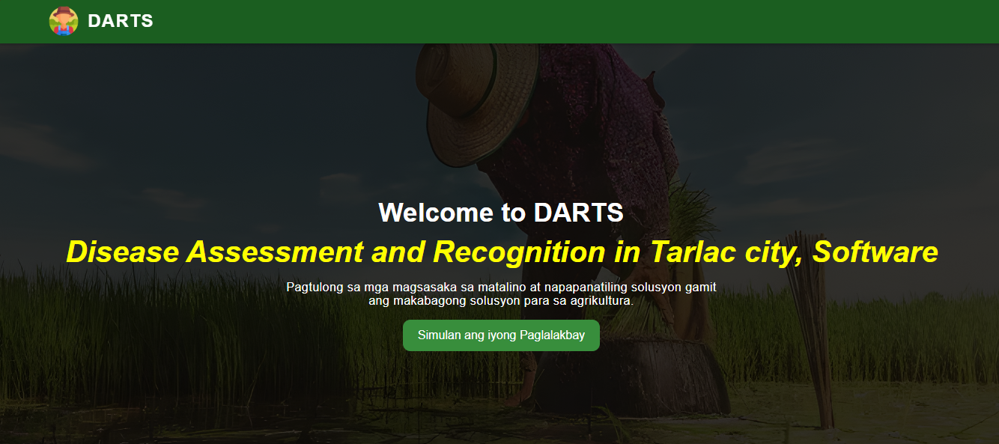

Selected work
Curated projects with a refined, editorial presentation.
A polished showcase of the systems and interfaces I’ve built, structured as a clean portfolio album rather than a traditional page.
Featured project
Project overview
The DARTS system is a web-based platform built to help farmers in Tarlac City identify and assess rice crop diseases using modern technology. It combines a user-friendly dashboard, a disease recognition workflow, and reporting tools so agricultural teams can monitor crop health with confidence.
Outcome Reduced disease identification time and improved decision-making for local farmers.
Users Farmers, agronomists, and local agriculture officers.
Tech Python backend, responsive UI, and data-driven disease profiles.
Role Full-stack implementation, UI design, and deployment support.

Album
Other featured projects
Contact
Need a similar solution?
If you'd like a custom web application built with the same polished interface and practical workflows, send a message and let's discuss the next project.
Email: Mark@dentair.shop